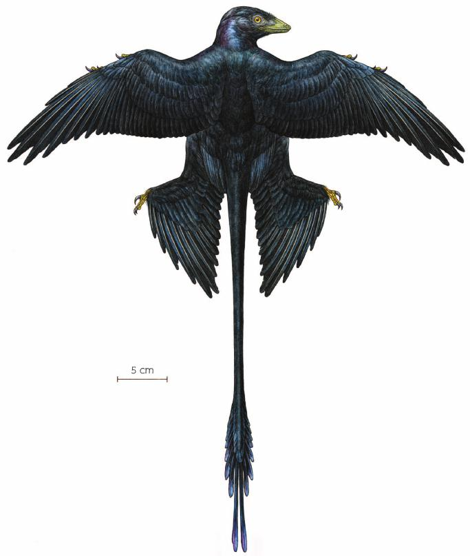
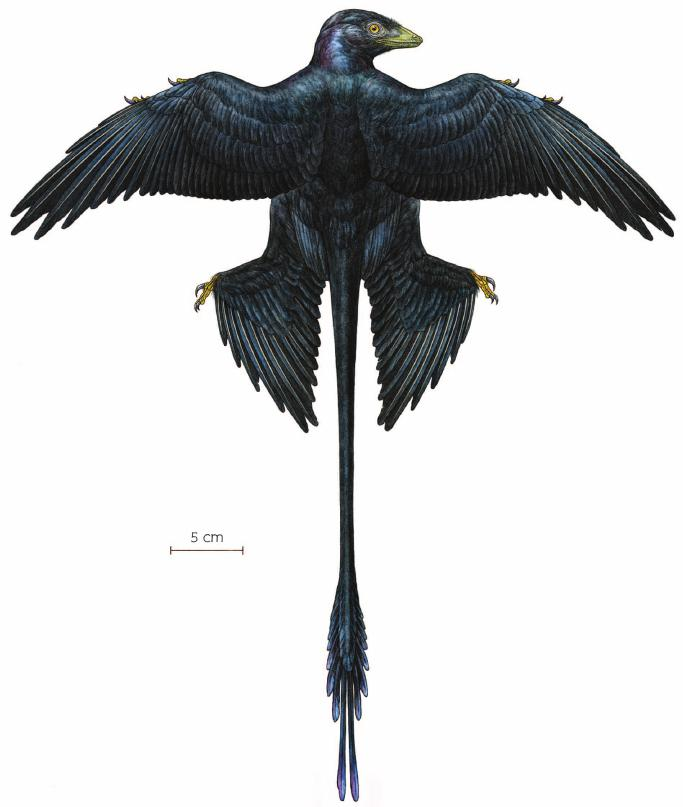

10/01/2025
Faun. . . ah
I’m beginning to consider adding more fauna to my terrarium, or perhaps building another at a later time that has living fauna. With this terrarium, I want to make a false ecosystem with false fauna to demonstrate a living one. So I’m considering adding a few more models in addition to the Tyrannosaurus’s to maybe add a sense of fullness and make them feel (not literally) less lonely.
There are specifically two choices I’m leaning towards; alamosaurus and microraptors. These two creatures could (theoretically) more coexist with a pair of tyrannosauraids both because of their size and their nature.

and


Alamosaurus were long-necked heavy-set herbivores that were prey to the Tyrannosaurus, however because of how large they were they could easily withstand larger predators. Microraptors were the opposite; they were so small and fast that they most likely didn’t get caught super often.
Fun fact: Microraptor fossils were so well preserved that we do actually know what they looked like and what colors they were! They were black with a blue and green iridescent sheen, most like crows and corvids in the present.